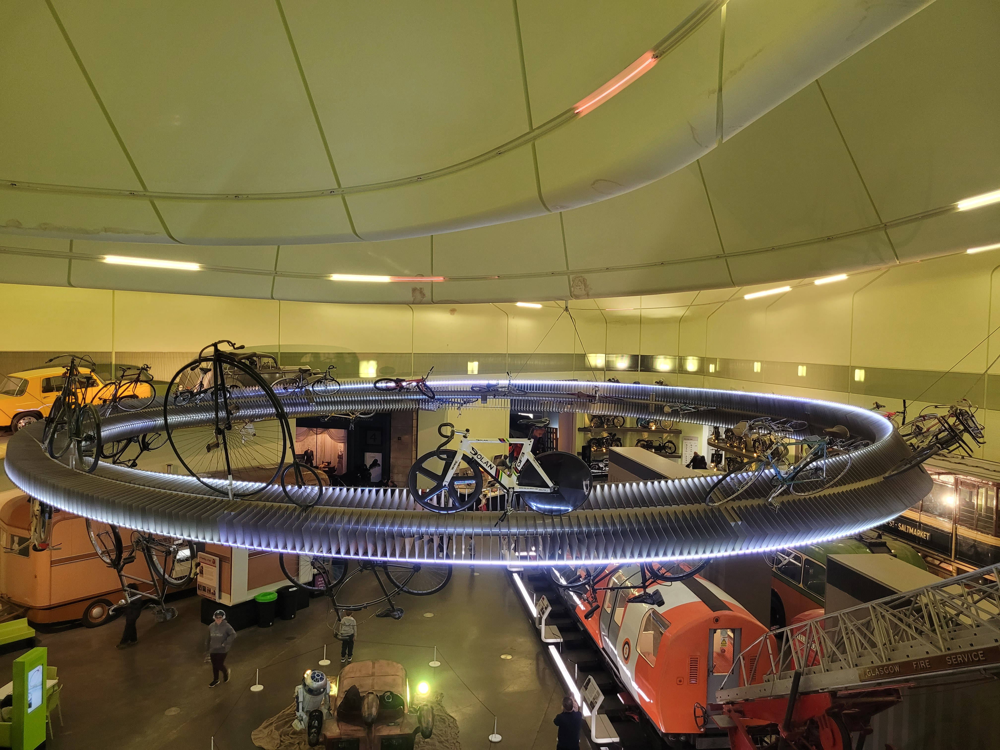
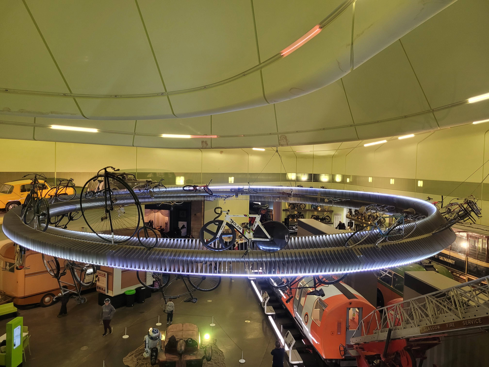
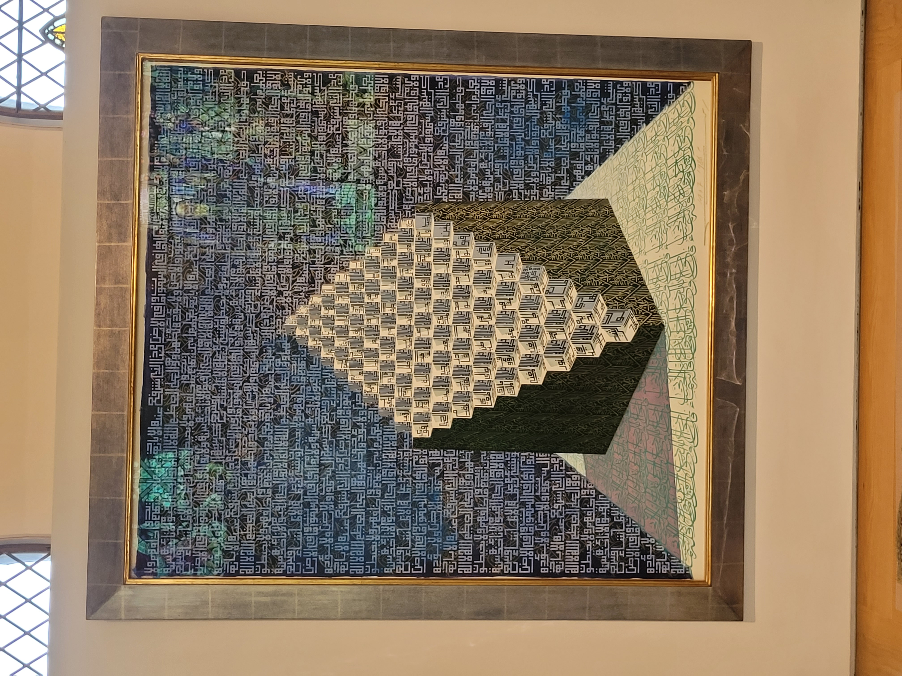
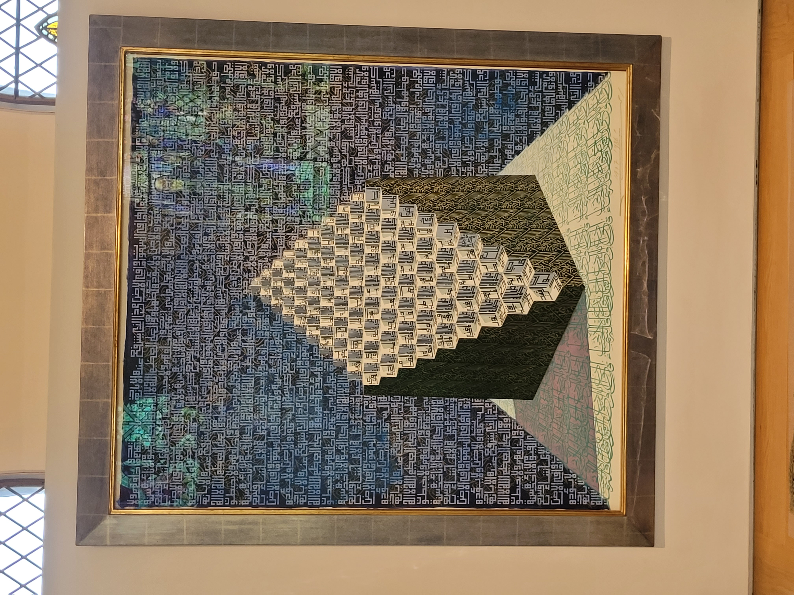

.jpg)
 

 



HISTORY: Originally a private collection owned by Sir William and Lady Constance Burrell in the early 20th century, the Burrells decided to donate their collection to the public. In 1944, they donated the entire collection to Glasgow Corporation. The museum was built in Pollok Country Park, opening in 1983.
Renovation: A major refurbishment took place in 2016, with the museum reopening on 29 March 2022.
Exhibits: The Burrell Collection contains global art pieces, including Chinese porcelain from the Tang Dynasty, Islamic antiques from the Mughal Empire, and medieval Gothic art. It also holds one of the world's greatest collections of Degas' works.
Visitor Information: Opening Hours: Monday - Thursday, Saturday: 10:00am - 5:00pm Friday, Sunday: 11:00am - 5:00pm
Accessibility & Transport The museum is fully accessible, with lifts and an accessible café entrance. Paid parking is available at the front.
Public transport options:Pollokshaws West train station (10-minute walk) Bus services: 3switch, 57, 57A Nearest underground: Ibrox (30-minute walk)
Family & Activities The museum is child-friendly with interactive exhibits and quizzes. Free guided tours available. Picnic benches available, with a café and restaurant inside.
Pollok Country Park: A visit offers fresh air, exercise, and a chance to see the famous Highland cows.